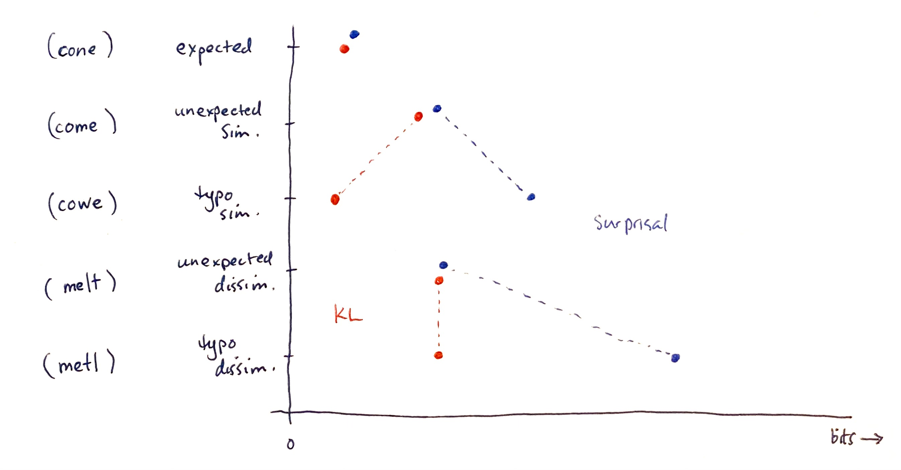

get cloze completions on blanks (just to debug, maybe get some better stimuli)
get norms for correction probabilities (ask people to fix the typos) in context (and in isolation)
Suggestions?
One more thing
As is, the setup is: Given some predictable word (✅\textit{cone}), compare effort on typo (❓\textit{cowe}) to a similar, unexpected word (⚠️\textit{come}):
surprisal predicts it is harder. KL predicts easier.
But we’re not just predicting that typos are always easy.
Also need typos that aren’t similar to expected word:
✅
⚠️_simil
❓_simil
⚠️_dissim
❓_dissim
\textit{The children's eyes lit up when they saw the ice cream} \dots 